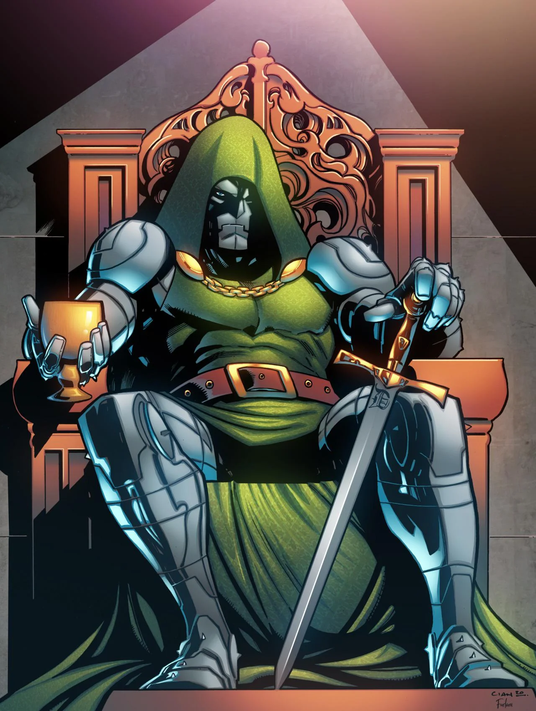

1. Nome original
A Marvel já se chamou Timely Comics e Atlas Comics antes de ter o nome atual.
A Marvel já se chamou Timely Comics e Atlas Comics antes de ter o nome atual.
No início, o Hulk era cinza, mas mudou para verde por conta da impressão na época.
Stan Lee teve a ideia do Homem-Aranha ao ver uma mosca subindo na parede.

4. Curiosidade Doutor Destino
Obcecado pela perfeição, o Doutor Destino sofreu um pequeno corte no rosto após ignorar os avisos de Reed Richards sobre os erros em uma de suas máquinas. Incapaz de aceitar a mínima imperfeição e tomado pela vaidade e raiva, ele viajou até o Tibet e ordenou que monges criassem uma máscara de ferro para ele, forçando-a contra o próprio rosto enquanto o metal ainda estava em brasa e se desfigurando permanentemente por pura impaciência.